マルチテストプレイ
⭐1.機能概要
この機能は、編集したステージでマルチプレイのシチュエーションをシミュレートし、ステージ演出を素早く検証するためのものです。⭐2.開き方
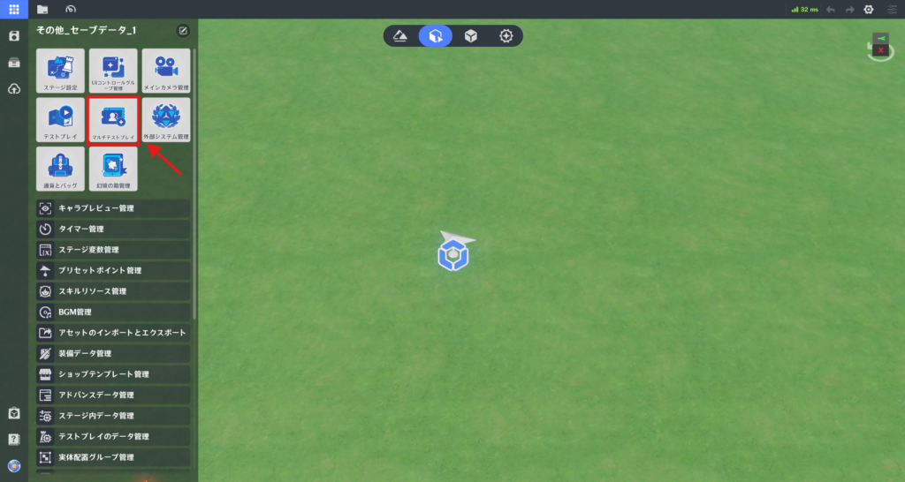
左上のシステムメニューを開き、「マルチテストプレイ」をクリックします。
⭐3.マルチプレイテストルーム
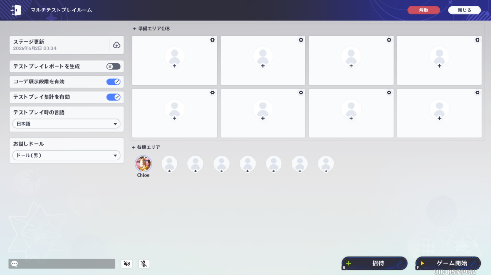
テストプレイ時と同じように、テストプレイ検証が行われます。チェックOKになると、マルチテストプレイルームの画面に切り替わります。
マルチテストプレイでは、最後にテスト検証が行われたデータが読み込まれます。
ステージ編集をした場合は、最新の変更内容を反映させるために、必ず「ステージ更新」を実行してください。
🌸1.ルーム機能
(1) 待機エリア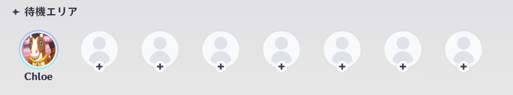
ルームに参加したプレイヤーは、待機エリアの空いている席に順次割り振られます。
待機エリアにいるプレイヤーは、テストプレイには参加しません。
プレイヤーは、待機エリア または 準備エリアの空いている席をクリックすることで、移動することができます。
※ステージ製作者がテストプレイに参加しなくてもテストプレイは開始できます。
(2) 準備エリア
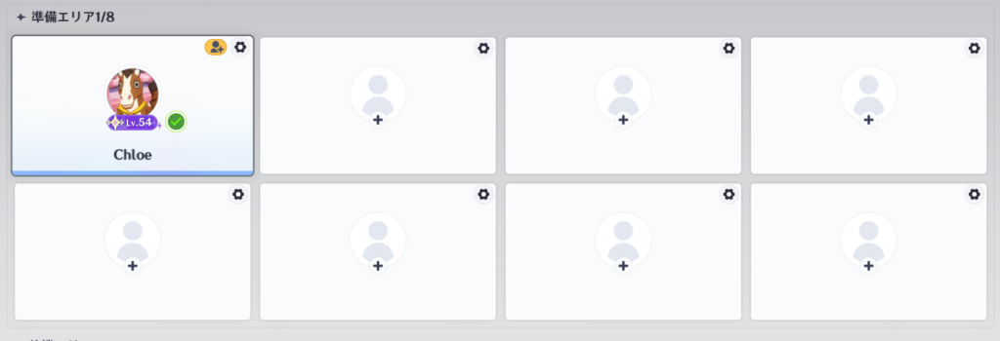
テストプレイに参加するプレイヤーが待機する場所です。
招待されたプレイヤーは画面右下の「準備完了」ボタンをクリックする必要があります。
ホストがゲームを開始した時に、準備完了を押していないプレイヤーは待機エリアに移動されます。
(3) プレイヤー招待
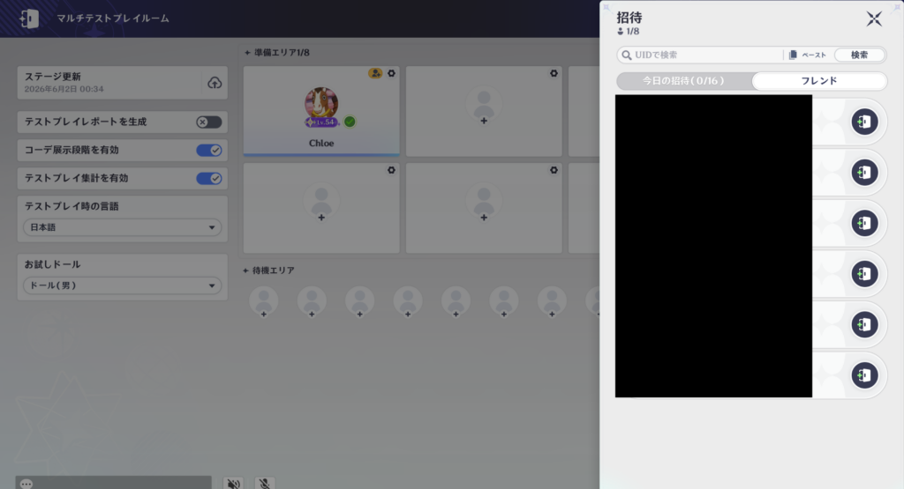
ホストが「招待」ボタンをクリックすると、右側に「招待」画面が表示されます。
検索後、招待ボタンから招待を送信し、相手が承認するとルームに参加します。
招待ボタンから、再度招待を送ることができます。
招待ボタンから、招待を送信することができます。
招待プレイヤー
マルチプレイテストプレイ招待への応答時間は15秒です。
時間内に応答しない場合、自動的に辞退扱いになります。
招待に関する制限
「本日の招待枠」は午前0時にリセットされます。/li>
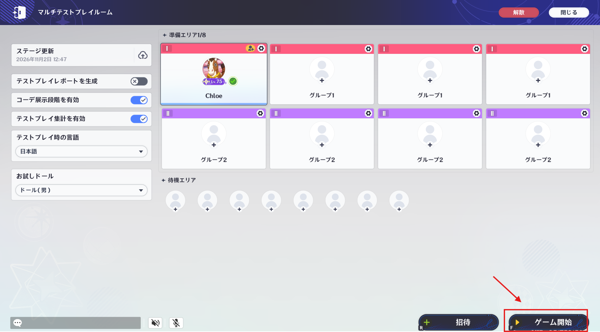
ホストは、右下の「ゲーム開始」ボタンからテストプレイを開始できます。
テストプレイが始まると、準備エリアのすべての席は参加不可となります。
テストプレイに入ったプレイヤーの状態は「プレイ中」に切り替わり、コーデ展示フェーズが開始されます。
🌸2.テストプレイ設定
(1) ステージ更新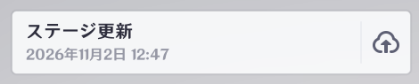
最後に編集されたステージをマルチテストプレイルームにアップロードします。
この操作を事項すると、全プレイヤーが待機エリアへ移動し、再度「準備完了」の状態にする必要があります。
(2) テストプレイレポートを生成
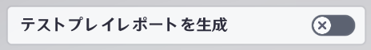
この機能を有効にすると、テストプレイに参加した全プレイヤーのローカル環境で、終了時に自動的にレポートが生成されます。
これは「負荷検出」を確認するためのもので、クリエイターはこのレポートをインポートすることで、各プレイヤーのセッション中における動的負荷を詳細に確認することができます。
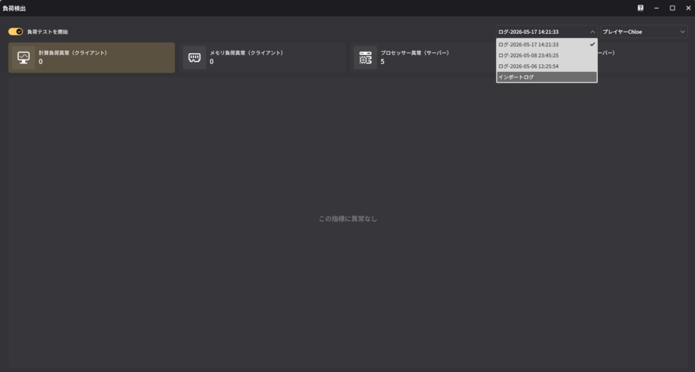
保存パス：C:\Users%USERPROFILE%\AppData\LocalLow\miHoYo\Genshin
Impact\BeyondLocal(プレイヤーのUID)\Beyond_Performance_Report
(3) コーデ展示段階を有効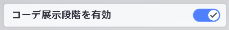
無効にすることで、テストプレイ時にコーデ展示のフェーズをスキップして、直接ロード画面へ移動します。
(4) テストプレイ集計を有効
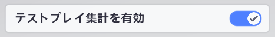
無効にすることで、テストプレイ時にコーデ展示のフェーズをスキップして、直接ロード画面へ移動します。
(5) テストプレイ時の言語
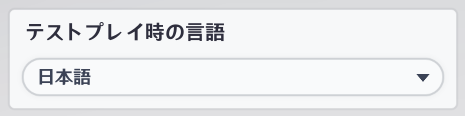
設定した言語でテストプレイを開始します。
各プレイヤーで設定することができます。
(6) お試しドール
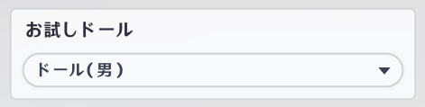
設定したドールでテストプレイを開始します。
各プレイヤーで設定することができます。
(7) テストプレイデータ設定
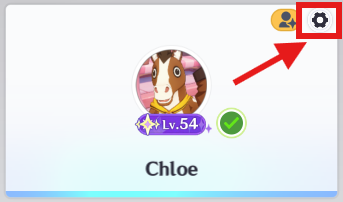
テストプレイを開始する前に、ホストは各席の右上にある設定ボタンから、席毎のデータを設定できます。
※これらの設定は席毎に紐づけられています。
(8) テストプレイ中のプレイヤー管理
ホストは、招待したプレイヤーを削除したり待機エリアへ移動させたりすることができます。
プレイヤーを退出させる：テストプレイルームからプレイヤーを退出させます。
プレイヤーがテストプレイ中の場合は、プレイが終了した時点で退出となります。
待機エリアに移動させる：プレイヤーを空いている待機エリアの席へ移動させます。
(9) ルーム解散プレイヤーがテストプレイ中の場合は、プレイが終了した時点で退出となります。
待機エリアに移動させる：プレイヤーを空いている待機エリアの席へ移動させます。
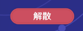
ホストは、「解散」ボタンからマルチテストプレイルームを閉じることができます。
解散すると、全てのプレイヤーはルームに参加する前の場所に戻ります。
(10) ルーム折り畳み
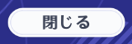
ホストは、「閉じる」ボタンから、マルチテストプレイルームを最小化し、画面上部のメニューバーに格納します。
この操作を行ってもルームは維持され、招待されたプレイヤーはそのままルーム内に残ります。
⭐4.マルチテストプレイ中の操作
🌸1.退出
テストプレイ中に、左上の「退出」ボタン または Escキーから「テストプレイ制御画面」を開くことができます。
🌸2.テストプレイ制御
(1) 挑戦を続ける
ホストが可能な操作：再挑戦、挑戦を中断する
招待プレイヤーが可能な操作挑戦を中断する
招待プレイヤーが可能な操作挑戦を中断する
マルチテストプレイ中に、いずれかのプレイヤーがセッションを途中で退室した場合、再挑戦はできません。
⭐5.マルチテストプレイの集計
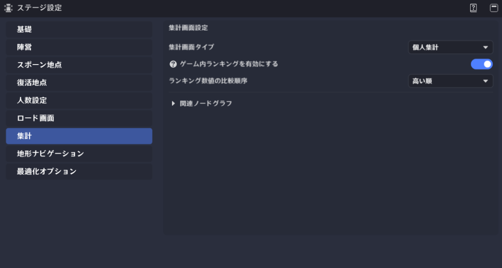
テストプレイが終了すると、ステージ設定に基づき、集計フローの実行およびリザルト画面の表示が行われます。
クリエイターは、ステージ設定の「集計」からこれらの設定を行うことができます。